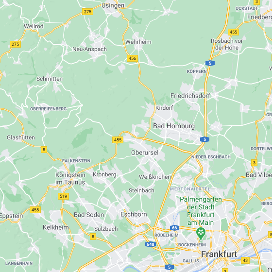
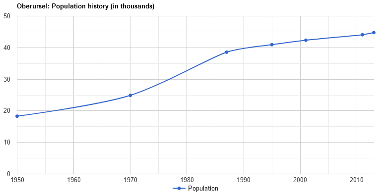
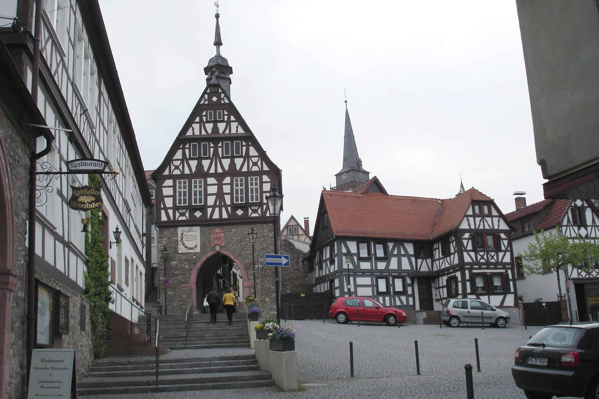
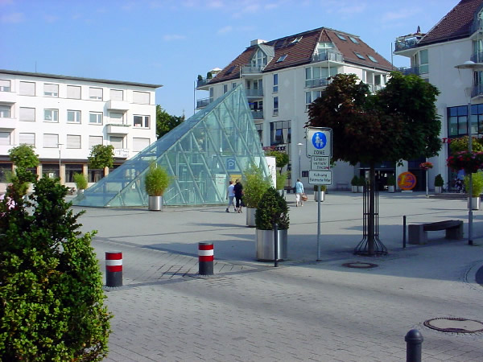
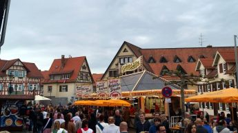

Location
Oberursel, Germany
Oberursel (Taunus) (German: [oː.bɐ.ˈʊʁ.zl̩] (About this soundlisten)) is a city in Germany and part of the Frankfurt Rhein-Main urban area. It is located to the north west of Frankfurt, in the Hochtaunuskreis county. It is the 14th largest town in Hesse.The maximum distance from the northern town border to the southern border is 7.2 km (4 mi) the maximum distance from east to west is 13.0 km (8 mi).
Demographics
Population
| 1950-1970 | +1.55 %/year |
| 1970-1987 | +2.61 %/year |
| 1987-1995 | +0.75 %/year |
| 1995-2001 | +0.57 %/year |
| 2001-2011 | +0.4 %/year |
| 2011-2013 | +0.78 %/year |
Source: population.city
History of the Population
The town was first mentioned as "Ursella" in 791 in a deed recording a donation to the monastery Lorsch. In the year 880 the first church in the area, called "monasterium ad ursellam", was mentioned. In 1317 the first trading activities were documented. In 1444 Oberursel was officially sanctioned as a town. Two years later, the town wall was finished.
As the town was rebuilt and grew, many mills and forges were founded along the "Urselbachtal". By 1858, industrialisation had begun in Oberursel, with several cotton-spinning mills being built. In 1860 Oberursel was linked to the railway between Bad Homburg and Frankfurt.
Culture and Attractions
Culture
The "Vortaunus museum" is located in the central marketplace. Its exhibits illustrate the town's history and the history of soap box derbies. Soap box derbies were invented in Oberursel, and the world championship is held in Oberursel every year.
Attractions
Another popular event occurring in Oberursel is the Brunnenfest, an annual village fair held in the early summer, which attracts visitors from surrounding areas and around the world.
Economy
Driven by IT and Tourism

There are many well known companies located in Oberursel, predominantly in the IT and tourism industries. Thomas Cook AG Utimaco Safeware AG Dimension Data Germany AG & Co (Until 2014) Alte Leipziger (insurance) Rolls-Royce Deutschland GmbH AVIS AFN ( Transmitter Weisskirchen) IBM Data Center, Bommersheim Dantotsu Intelligent Solutions GbR[citation needed] Condor Airlines operates an office in Oberursel.[4] Prior to its dissolution, Aero Lloyd was headquartered in Oberursel.[5] When Aero Flight existed, it had its head office in Oberursel.[6]
Source: Wikipedia